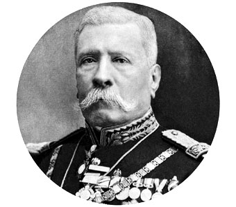
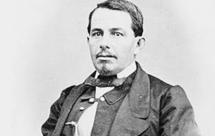

Heroes de la batalla de Puebla
General Ignacio Zaragoza
Famoso militar mexicano qiuen enfrentó las fuerzas francesas de Napoleón III en Acultzingo en la llamada Batalla de Las Cumbres de Acultzingo, el 28 de abril de 1862. Zaragoza comprendió la posición defensiva y favorable que tenía la ciudad de Puebla, paso obligado para ir a la Ciudad de México, y con un ejército más pequeño y menos equipado que los franceses, logró dar una batalla excepcional desde los cerros de Loreto y Guadalupe el 5 de mayo de 1862.

General Porfirio Díaz
Militar y político mexicano, Porfirio Díaz ingresó en el ejército, y su carrera militar fue meteórica. En la guerra de Reforma (1858-1861), conflicto civil en el que se enfrentaron conservadores y liberales, apoyó la causa liberal. La guerra concluyó con la victoria de los liberales y llevó a la presidencia a Benito Juárez (1861); finalizada la contienda, Porfirio Díaz fue ascendido a general y elegido diputado. Apenas un año más tarde tomó de nuevo las armas contra la invasión francesa (1862-1863) y la coronación de Maximiliano I (1864-1867) como emperador de México. Fue jefe de brigada en Acultzingo en abril de 1862 y ese mismo año participó en la batalla de Cinco de Mayo al lado de Ignacio Zaragoza. El prestigio y popularidad ganados en sus últimas campañas lo dejó en situación de optar a la presidencia, pero el Congreso prefirió a Benito Juárez en 1867.

Felipe Berriazábal
Felipe Berriozábal Militar e ingeniero, nació en Zacatecas. Fue gobernador de los estados de México, Michoacán y San Luis Potosí. Como militar llegó a General y fue ministro de Guerra y Marina. Participó en la Guerra de Reforma y contra la Intervención Francesa. En la batalla del 5 de mayo en Puebla, actuó bajo las órdenes del general Ignacio Zaragoza , aseguró el triunfo de los mexicanos al dar alcance con la caballería. En 1863, fue hecho prisionero por los franceses, logró fugarse uniéndose al presidente Benito Juárez, quien lo designó en 1865 como Ministro de la Guerra.

Miguel Negrete
Durante la Segunda Intervención Francesa en México, Negrete hizo a un lado su ideología conservadora y participó en la defensa del territorio mexicano, ante el avance de las tropas francesas hacia el centro de México, Negrete reacciona y se pone de parte del bando liberal con su célebre frase “Yo tengo Patria antes que Partido”.Unido al ejército republicano y a las órdenes del general Ignacio Zaragoza, ambos se cubren de gloria en la Batalla de Las Cumbres y en la Batalla de Puebla el 5 de mayo de 1862, llegando a ser considerado como el segundo héroe de dicha batalla al defender el Fuerte de Loreto.



 1
1 2
2 5
5 6
6 8
8 9
9 10
10